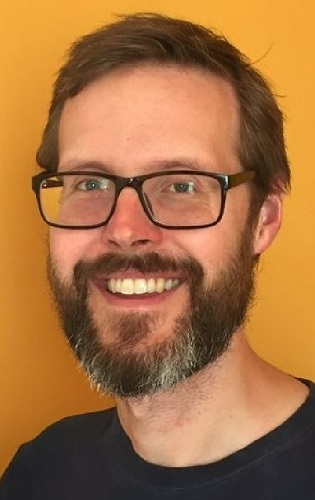
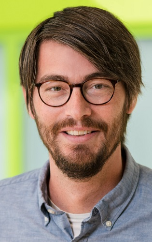

| DAY 1: Mon 27 Feb 2023 | DAY 2: Tue 28 Feb 2023 | DAY 3: Wed 1 Mar 2023 | DAY 4: Thu 2 Mar 2023 |
 Public Opening Lectures 6pm - 8pm Great Hall, Wills Memorial Building |
Interactive AI Day 10am - 3pm in-person, location TBA |
Public MyWorld AI Morning 9am - 1pm in-person, location TBA |
Visual AI4Ecology Talks 10am - 12noon Pugsley LT, QB |
Wilddrone Talks 12:30pm - 2pm Pugsley LT, QB | |||
Online AI Tutorial 4pm - 5pm Public Online, MS Teams |
John Oldacre Centre Talks 2pm - 4pm Pugsley LT, QB |
AI meets Ecology Workshop 3pm - 4:30pm Public Online, MS Teams |
| Join us at the Great Hall! Come along to Wills Memorial Building on Monday 27 February 2023 between 6pm and 8pm for an evening of two fascinating lectures about how AI can assist wildlife conservation and wildlife documentary production. Robert Dawes from the BBC Research and Development Team and internationally renowned AI scientist and ecologist Prof Tanya Berger-Wolf from Ohio State University will take you on a journey to see how AI for Good can be a reality today. Reserve your free spot at these public lectures by BOOKING HERE. Full information about the talks and speakers can be found in the Speaker Section. |
 |  |  |
| Tanya Berger-Wolf | Robert Dawes | Benjamin Risse |
| Ohio (USA) | BBC (UK) | Muenster (Germany) |
| Frank van Langevelde | Tom Richardson | |
| WUR (Netherlands) | Bristol (UK) |
| Public In-person Lecture | 27 Feb | 6pm | Great Hall Prof Tanya Berger-Wolf (Ohio): PARTNERSHIP FOR CONSERVATION: AI and Humans Combatting Extinction Together
| ||
Brief Bio of Prof Tanya Berger-Wolf. As one of the founders of the field of computational ecology, and recently imageomics, Tanya is leading research at the unique intersection of computer science, wildlife biology, and social sciences. She creates computational solutions to generate, collect, analyze and derive insight from data to answer questions and make decisions in ecology, environment and wildlife conservation. Tanya is a Professor of Computer Science and Engineering; Electrical and Computer Engineering; and Evolution, Ecology, and Organismal Biology at the Ohio State University, where she is also the Director of the Translational Data Analytics Institute. She is also a director and co-founder of the AI for conservation software non-profit Wild Me, home of the Wildbook project, which brings together computer vision, crowdsourcing, and conservation. It has been recently chosen by UNSECO as one of the top AI 100 projects worldwide supporting the UN Sustainable Development Goals. Tanya is a co-founder of a several big projects and fields of study. She works with many teams of brilliant people who do cool, amazing, and impactful things. | |||
| Public In-person Lecture | 27 Feb | 6pm | Great Hall Robert Dawes (BBC): KEEPING WATCH: Using AI to assist Natural History Television Production
| |||
Brief Bio Robert Dawes (MEng). Robert studied Computer Science at the University of Bristol before joining BBC R&D. He worked on set top box technologies and in the BBC iPlayer team before joining Immersive & Interactive Content investigating the application of image analysis, computer vision and tracking technologies to broadcasting. Much of his work is on supporting television productions, but also applied in the development of sports graphics systems and as part of the Biomechanics project where he helped to create a diving analysis tool used in the television coverage of the London 2012 Olympics. | |||
| Public Online Lecture | 2 Mar | 4pm | MS Teams Prof Benjamin Risse (Muenster) IS SCIENCE MOSTLY DRIVEN BY IDEAS OR BY TOOLS: In-field insect monitoring, tracking and environmental mapping systems Starting from the maybe provocative questions if 'science is mostly driven by ideas or by tools' (Dyson 2012) I will present one of the most difficult computer vision and machine learning scenario, namely quantifying insect behaviour in natural environments: Tiny, low contrast and fast moving objects have to be localised in cluttered and dynamic scenes resulting in visual ambiguities, frequent occlusions and the need to process huge video files with inappropriate foreground-background ratios and sparse visitation events. I will summarize some of the most prominent challenges to detect insects and quantify their in unconstrained settings and will introduce an appearance-agnostic in-field animal detection and tracking algorithm to extract accurate measurements from camera footage. I will close by presenting complementary environmental mapping approaches that yield rich contextual information, and moreover can be combined with behavioural data to achieve the urgently needed lab-level quantifications in wildlife conditions. | |||
| Public Online Lecture | 2 Mar | 4pm | MS Teams Prof Frank van Langevelde (WUR) | |||
| In-person Lecture | 2 Mar | 12:30pm | Pugsley LT Prof Tom Richardson (University of Bristol) | |||
| See University of Bristol Website Terms of Use |